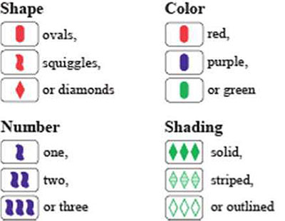

Set (stylized as SET) is a real-time card game. The deck consists of 81 unique cards that vary in four features across three possibilities for each kind of feature: number of shapes (one, two, or three), shape (diamond, squiggle, oval), shading (solid, striped, or open), and color (red, green, or purple). Each possible combination of features (e.g. a card with three striped green diamonds) appears as a card precisely once in the deck.
In the game, certain combinations of three cards are said to make up a set. For each one of the four categories of features — color, number, shape, and shading — the three cards must display that feature as a) either all the same, or b) all different. Put another way: For each feature the three cards must avoid having two cards showing one version of the feature and the remaining card showing a different version.